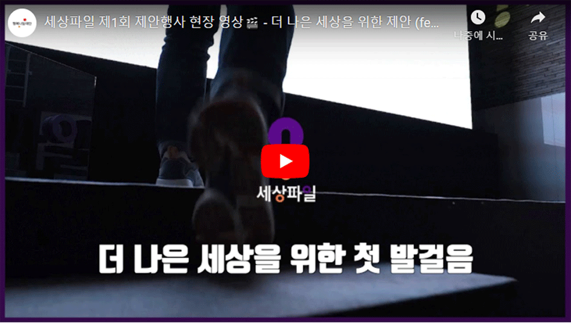
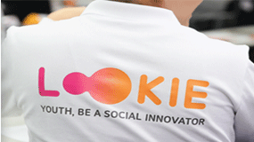

세상파일
세상파일은 더나은 세상을 만들기 위해 사회문제 해결에 효과적인 솔루션을 개
발하고 확산하는 플랫폼입니다.
오늘날 사회문제가 더욱 복잡하고 다양한 형태로 변화함에 따라,사회문제의 근
본적 원인을 파악하고 효과적으로 해결하는 것이 중요합니다.
세상파일은 이러한 고민을 바탕으로 더 나은 세상을 위해 검증된 솔루션을 개발
하고 확산하며,직속적인 사회변화 참여를 이끌어냅니다.
온라인으로만난
2020 세상파일 제안행사를 소개합니다
세상파일의 두번째 제안행사'세상파일을 열다'가
11월25일, 온라인으로 개최되었습니다.
세상파일 제안행사는 1년간 준비한 사회문제 해결 프로젝트를
소개하는 자리로,프로젝트의 필요성과 효과성을 널리 알리고
후원기업의 참여를 제안하기 위한 행사입니다
언제어디서나 내마음에
귀기울여 주는 누군가가 있다면
최근 우리 사회는 전례없는 혼란을 겪고있습니다.
지난3월,WHO(세계보건기구)가 코로나19 팬데믹을 선언한 이후
지속적인 경제 성장률 하락과 대규모 감염자 발생으로
사회 분위기는 어느 때보다 침울한 상황이죠.
여기에 코로나19 해결에 도화선이 되어야 할 백신 개발까지
더뎌지며,사회전반에 우울과 불안의 그림자를 깊게 드리운
'코로나 블루'가 심각한 사회문제로 떠오르고 있습니다.
언제어디서나 내마음에
귀기울여 주는 누군가가 있다면
최근 우리 사회는 전례없는 혼란을 겪고있습니다.
지난3월,WHO(세계보건기구)가 코로나19 팬데믹을 선언한 이후
지속적인 경제 성장률 하락과 대규모 감염자 발생으로
사회 분위기는 어느 때보다 침울한 상황이죠.
여기에 코로나19 해결에 도화선이 되어야 할 백신 개발까지
더뎌지며,사회전반에 우울과 불안의 그림자를 깊게 드리운
'코로나 블루'가 심각한 사회문제로 떠오르고 있습니다.

